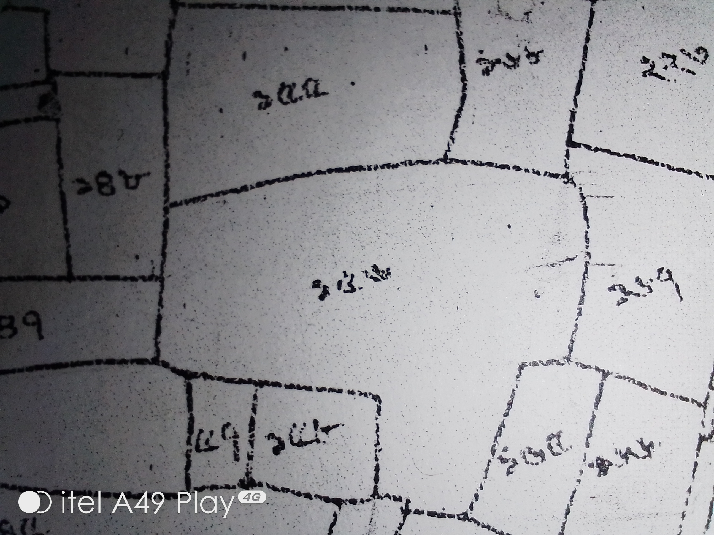
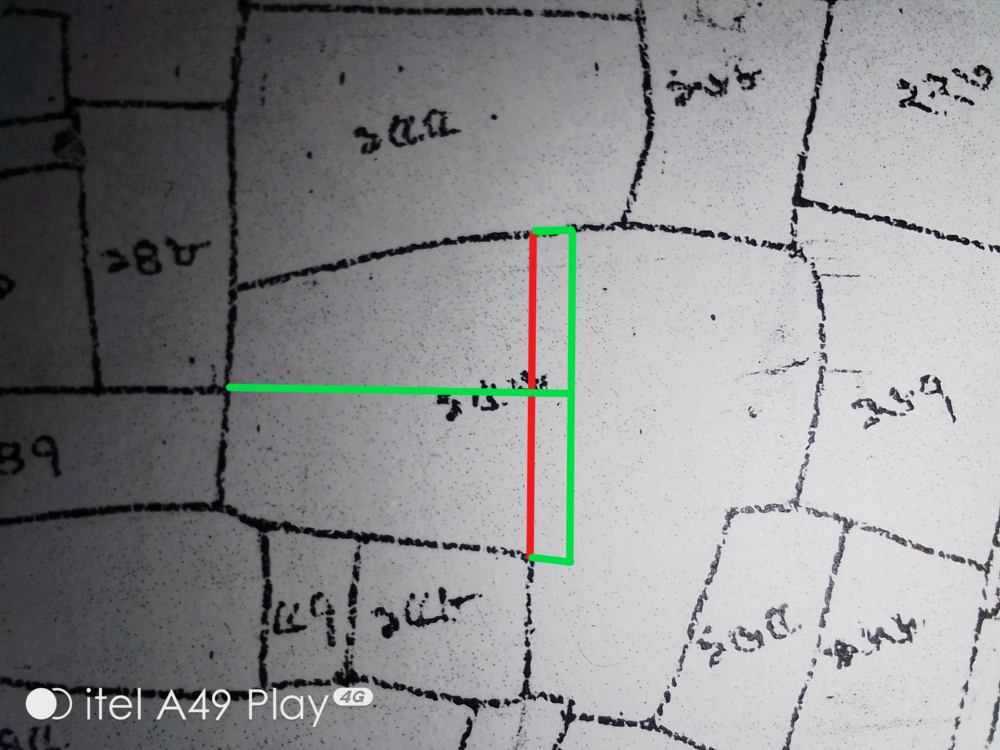
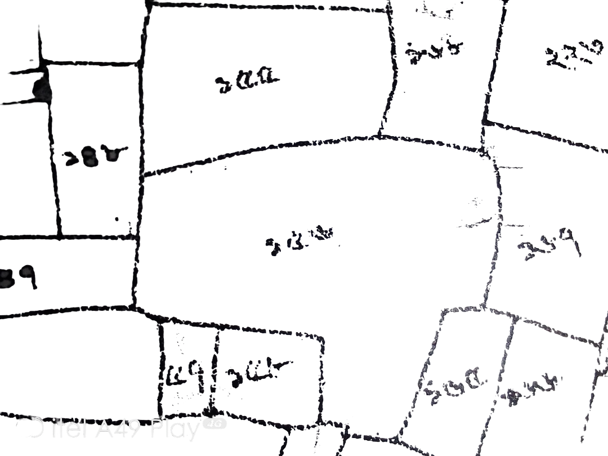
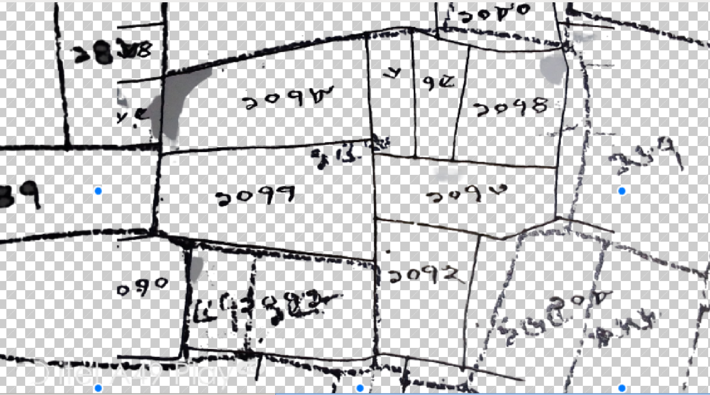

রেকর্ড সংশোধন পাতা
وَلَا تَأْكُلُوٓا۟ أَمْوَٰلَكُم بَيْنَكُم بِٱلْبَـٰطِلِ وَتُدْلُوا۟ بِهَآ إِلَى ٱلْحُكَّامِ لِتَأْكُلُوا۟ فَرِيقًۭا مِّنْ أَمْوَٰلِ ٱلنَّاسِ بِٱلْإِثْمِ وَأَنتُمْ تَعْلَمُونَ ١٨٨
Do not consume one another’s wealth unjustly,
nor deliberately bribe authorities in order to devour a portion of others’ property,
knowing that it is a sin. Quran(2:188)
তোমরা নিজেদের মধ্যে একে অন্যের ধন অন্যায়ভাবে গ্রাস করো না
এবং মানুষের ধন-সম্পদের কিয়দংশ জেনেশুনে অন্যায়ভাবে গ্রাস করার উদ্দেশ্যে বিচারকগণকে ঘুষ দিও না।
সূরাঃ আল-বাকারা - ১৮৮
এখানে এমন ব্যক্তি সম্পর্কে বলা হচ্ছে, যার কাছে অপরের কোন প্রাপ্য থাকে, কিন্তু প্রাপকের নিকট তার প্রাপ্য অধিকারের কোন প্রমাণ থাকে না,
ফলে এই দুর্বলতার সুযোগ গ্রহণ করে সে আদালতের আশ্রয় নিয়ে বিচারকের মাধ্যমে নিজের পক্ষে ফায়সালা করিয়ে নেয়
এবং এইভাবে সে প্রাপকের অধিকার হরণ করে নেয়। এটা যুলুম ও হারাম। আদালতের ফায়সালা যুলুম ও হারামকে বৈধ ও হালাল করতে পারবে না।
এই অত্যাচারী আল্লাহর নিকট অপরাধী বিবেচিত হবে। (ইবনে কাসীর)
এ আয়াতটির এক অর্থ হচ্ছে, শাসকদেরকে উৎকোচ দিয়ে অবৈধভাবে লাভবান হবার চেষ্টা করো না। এর দ্বিতীয় অর্থ হচ্ছে, তোমরা নিজেরাই যখন
জানো এগুলো অন্যের সম্পদ, তখন শুধুমাত্র তার কাছে তার সম্পদের মালিকানার কোন প্রমাণ না থাকার কারণে অথবা একটু এদিক-সেদিক করে
কোন প্রকারে প্যাঁচে ফেলে তাঁর সম্পদ তোমরা গ্রাস করতে পার বলে তার মামলা আদালতে নিয়ে যেয়ো না। কেননা, আদালত থেকে ঐ সম্পদের
মালিকানা অধিকার লাভ করার পরও প্রকৃতপক্ষে তুমি তার বৈধ মালিক হতে পারবে না। আল্লাহর কাছে তো তা তোমার জন্য হারামই থাকবে।
(তাফসীরে জাকারিয়া)
(এই আায়াতটি কোন বিচার ব্যবস্থা বা বিচারকগণকে উদ্দেশ্য করে এই পাতায় সংযোজন করা হয়নি।)
যে সমস্ত জমির রেকর্ড সংশোধন প্রয়োজন।
হাতিল মৌজা: দাগ নং: ১০৭২, ১০৭৩, ১০৭৭
হাতিল মৌজা: দাগ নং: ১০৭২, ১০৭৩, ১০৭৭
| ক্রমিক নং: | জমির অবস্থান | জমির স্থানীয় নামও বর্ননা | আর এস দাগ নং: | আর এস খতিয়ান নং: | এস এ দাগ নং: | এস এ খতিয়ান নং: | সি এস দাগ নং: | সি এস খতিয়ান নং: | জমির পরিমান (শতাংশ) | দখলে থাকা জমির পরিমান (শতাংশ) | জমির মালিকের নাম |
| ১ | আর এস জে.এল. নম্বর: ১০৪, সিট নং: ২ | কুচাগারির গোল (ডাক্তারের জমি) | ১০৭২ | ২৫৮ | -- | -- | ১৫৬ | ৯৮ | -- | ১৮.৮৮ | তালেবুর রহমান (আব্দুস সালাম হবে) |
| ২ | আর এস জে.এল. নম্বর: ১০৪, সিট নং: ২ | কুচাগারির গোল (ডাক্তারের জমি) | ১০৭৩ | ৩৭২ | -- | -- | ১৫৬ | ৯৮ | ১৮.৫০ | ১৮.২৫ | মাহবুবর রহমান (বানান ভুল মাহবুবুর রহমান হবে) |
| ৩ | আর এস জে.এল. নম্বর: ১০৪, সিট নং: ২ | কুচাগারির গোল (মোজাফর) | ১০৭৭ | ৩৭৫ | -- | -- | ১৫৬ | ৯৮ | ৩২.৫০ (দলিল অনুযায়ী জমির পরিমাণ ৩৬ শতাংশ হবে) | ২৯.৫৫ | মাহাবুবা আক্তার বিবি (মাহবুবা আক্তার নামের শেষে বিবি হবে না।) |
| ক্রমিক নং: | দলিল নং | দলিলের তারিখ | গ্রহীতার নাম | দাতার নাম | দাগ নং: | খতিয়ান নং: | জমির পরিমাণ |
| ১ | ৮৪০ | ২০-০১-৮৩ | মোছাঃ মাহবুবা আখতার | মোঃ মোজাফর হোসেন | সি এস ১৫৬ | ৯৮ | ৩৬ |
| ২ | ৭৫৭৫ | ১৬-০৬-১৯৯০ | মোঃ মাহবুবুর রহমান | মোঃ তালেবুর রহমান | সি এস ১৫৬ | ৯৮ | ১৮ |
| ৩ | ৪৪০৯ | ২৬-০৫-২০০২ | মোঃ আব্দুস সালাম | আলহাজ মোঃ তালেবুর রহমান | সি এস ১৫৬; এম আর আর ১০৭২ | এম আর আর ৯৮ নং হাল বুজারত ১৩৬০ নং জিপি ২৫৮ (ইত্যাদি যাহা দলিলে লেখা হইয়াছে) | ১৮ |
|

স্থির চিত্র: (ক) - সি এস হাতিল জে এল নং ১০৪ এ ১৫৬ নং দাগের অবস্থান
|
 স্থির চিত্র: (খ) -আর এস হাতিল জে এল নং ১০৪ এ দাগ নং: ১০৭২, ১০৭৩, ১০৭৭ নং দাগের অবস্থান
স্থির চিত্র: (খ) -আর এস হাতিল জে এল নং ১০৪ এ দাগ নং: ১০৭২, ১০৭৩, ১০৭৭ নং দাগের অবস্থান
|
 স্থির চিত্র: (গ) -আর এস হাতিল জে এল নং ১০৪ এ দাগ নং: ১০৭২, ১০৭৩, ১০৭৭ নং দাগের সার্ভেয়ার রিপোর্ট
স্থির চিত্র: (গ) -আর এস হাতিল জে এল নং ১০৪ এ দাগ নং: ১০৭২, ১০৭৩, ১০৭৭ নং দাগের সার্ভেয়ার রিপোর্ট
|
 স্থির চিত্র: (ঘ) -আর এস হাতিল জে এল নং ১০৪ এ দাগ নং: ১০৭২, ১০৭৩, ১০৭৭ নং দাগের সার্ভেয়ার রিপোর্ট
স্থির চিত্র: (ঘ) -আর এস হাতিল জে এল নং ১০৪ এ দাগ নং: ১০৭২, ১০৭৩, ১০৭৭ নং দাগের সার্ভেয়ার রিপোর্ট
|
 স্থির চিত্র: (ঙ) -আর এস হাতিল জে এল নং ১০৪ এ দাগ নং: ১০৭২, ১০৭৩, ১০৭৭ নং দাগের সার্ভেয়ার রিপোর্ট
স্থির চিত্র: (ঙ) -আর এস হাতিল জে এল নং ১০৪ এ দাগ নং: ১০৭২, ১০৭৩, ১০৭৭ নং দাগের সার্ভেয়ার রিপোর্ট
|

স্থির চিত্র: (চ) - সি এস হাতিল জে এল নং ১০৪ এ ১৫৬ নং দাগের অবস্থান
|
|

স্থির চিত্র: (ছ) -আর এস হাতিল জে এল নং ১০৪ এ দাগ নং: ১০৭২, ১০৭৩, ১০৭৭ নং দাগ স্বচ্ছ পশ্চাতপট (Transparent Background)
|
 স্থির চিত্র: (জ) - সি এস হাতিল জে এল নং ১০৪ এ ১৫৬ নং দাগের অবস্থান স্বচ্ছ পশ্চাতপট (Transparent Background)
স্থির চিত্র: (জ) - সি এস হাতিল জে এল নং ১০৪ এ ১৫৬ নং দাগের অবস্থান স্বচ্ছ পশ্চাতপট (Transparent Background)
|
|

স্থির চিত্র: (ঝ) সি এস হাতিল জে এল নং ১০৪ এ ১৫৬ নং দাগের উপর আর এস হাতিল জে এল নং ১০৪ এ দাগ নং: ১০৭২, ১০৭৩, ১০৭৭ নং দাগসমূহ স্থাপিত ম্যাপ(Overlayed)।
|
(১) সি এস হাতিল মৌজার ১৫৬ নং দাগে মোট ১৪৫ শতাংশ জমি আছে। স্থির চিত্র (ক)
(২) সি এস হাতিল মৌজার ১৫৬ দাগের উত্তর পশ্চিম অংশটি জনাব মোতাহারের নিকট ৩৬ শতাংশ বিক্রয় করা হয়েছে, যা আর এস খতিয়ানে দাগ নং ১০৭৮।
(৩) সি এস হাতিল মৌজার ১৫৬ দাগের উত্তর পূর্ব অংশের ৩৬ শতাংশ জমি তিন জন ক্রেতার নিকট বিক্রি করা হয়েছে। তারা হলেন, জনাব আব্দুস সামাদ (আর এস দাগ নং ১০৭৬), জনাব আব্দুস লতিফ (আর এস দাগ নং ১০৭৫) এবং জনাব আব্দুর রশীদ (আর এস দাগ নং ১০৭৪)।
(৪)সি এস ১৫৬ দাগের মাঝ বরাবর উত্তর দক্ষিনে সীমানা নির্ধারন করে ভুল ভাবে জমিকে ভাগ করা হয়েছে স্থির চিত্র (চ) এর লাল দাগ।
(৫) স্থির চিত্র (চ) এর লাল দাগ অনুযায়ী সিমানা নির্ধারন করলে সি এস দাগ নং ১০৭৮ (মোতাহার) এবং দাগ নং ১০৭৭ এ কোনোভাবেই ৩৬ শতাংশ জমি পূরণ করা যাবে না।
(৬) স্থির চিত্র (চ) এর সবুজ দাগ (যেটা নিখূত মাপ নয়) অনুযায়ী আর এস দাগ নং ১০৭৭ এবং আর এস দাগ নং ১০৭৮ এর পূর্ব সীমানা আরও পূর্ব দিকে সরে যাবে।
(৭) সি এস ১৫৬ দাগের উত্তর-পূর্ব অংশে, সি এস ১৬৭ এবং ১৬৮ দাগের সিমানায় একটি খাল ছিল যার আনুমানিক পরিমাণ ১ শতাংশ যেটা পরবর্তীতে ভরাট করা হয় এবং আর এস জরিপে তা ভূল ভাবে ১০৮০ দাগের অন্তর্ভূক্ত করা হয়েছে। স্থির চিত্র (খ)
(৮) সি এস ১৫৬ এবং আর এস দাগ নং: ১০৭২, ১০৭৩, ১০৭৭ ম্যাপ কে স্বচ্ছ পশ্চাতপটযুক্ত (Transparent Background) করা হয়েছে। স্থির চিত্র (ছ) এবং স্থির চিত্র (জ)।
(৯) স্থির চিত্র (ছ) কে স্থির চিত্র (জ) এর উপর স্থাপন করা হয়েছে (Image Overlayed)। স্থির চিত্র (ঝ)।
|
হাতিল মৌজা: আর এস দাগ নং: ১০৫১
হাতিল মৌজা: আর এস দাগ নং: ১০৫১
| ক্রমিক নং: | জমির অবস্থান | জমির স্থানীয় নামও বর্ননা | আর এস দাগ নং: | আর এস খতিয়ান নং: | এস এ দাগ নং: | এস এ খতিয়ান নং: | সি এস দাগ নং: | সি এস খতিয়ান নং: | জমির পরিমান (শতাংশ) | দখলে থাকা জমির পরিমান (শতাংশ) | জমির মালিকের নাম |
| ১ | আর এস জে.এল. নম্বর: ১০৪, সিট নং: ২ | ফকিরপাড়া, মঞ্জু | ১০৫১ | ৩৭২ | -- | -- | ৩৮ | ১৩৬ | ২০ (দলিল অনুযায়ী জমির পরিমাণ ২৫.৫০ শতাংশ হবে) | ২০ | মাহবুবর রহমান (বানান ভুল মাহবুবুর রহমান হবে) |
| ক্রমিক নং: | দলিল নং | দলিলের তারিখ | গ্রহীতার নাম | দাতার নাম | দাগ নং: | খতিয়ান নং: | জমির পরিমাণ |
| ১ | ৯৭৩ | ১৯-০১-৯৫ | মোঃ মাহবুবুর রহমান | মোঃ মোস্তাফিজুর রহমান | সি এস ৩৮ | সি এস ১৩৬ | ২৫.৫০ |
|
(১) কোনো সার্ভেয়ার দাগ নং ১০৫১ এবং আশেপাশের দাগ সমূহের জমির অংশ উদ্ধার করতে পারেন নাই
|
হাতিল মৌজা: আর এস দাগ নং: ২২০
হাতিল মৌজা: আর এস দাগ নং: ২২০
| ক্রমিক নং: | জমির অবস্থান | জমির স্থানীয় নামও বর্ননা | আর এস দাগ নং: | আর এস খতিয়ান নং: | এস এ দাগ নং: | এস এ খতিয়ান নং: | সি এস দাগ নং: | সি এস খতিয়ান নং: | জমির পরিমান (শতাংশ) | দখলে থাকা জমির পরিমান (শতাংশ) | জমির মালিকের নাম |
| ১ | আর এস জে.এল. নম্বর: ১০৪, সিট নং: ১ | হিন্দুপাড়া, মালোর আড়া (মালোআড়া), আতাউর (আতোয়ার) চাচার ভি (ভূঁই), পুল সংলগ্ন | ২২০(হাতিল-আর এস জে এল-১০৪ অনুযায়ী বর্তমানে জমির অবস্থান দাগ নং ২২০) | ২০৩ | -- | -- | ১০৫ এবং অন্যান্য | -- | (দলিল অনুযায়ী জমির পরিমাণ ১৯ শতাংশ) | ১৯ | আতায়ার রহমান,নজমুল সাহাদৎ, খায়রুল ইসলাম, আব্দুস সুলতান, ফারুক হােসেন(দলিল অনুযায়ী মাহবুবুর রহমান হবে) |
|
(১) দলিল অনুযায়ী ১৯ শতক আছে।
|
হাতিল মৌজা: আর এস দাগ নং: ১০৪৭
হাতিল মৌজা: আর এস দাগ নং: ১০৪৭
| ক্রমিক নং: | জমির অবস্থান | জমির স্থানীয় নামও বর্ননা | আর এস দাগ নং: | আর এস খতিয়ান নং: | এস এ দাগ নং: | এস এ খতিয়ান নং: | সি এস দাগ নং: | সি এস খতিয়ান নং: | জমির পরিমান (শতাংশ) | দখলে থাকা জমির পরিমান (শতাংশ) | জমির মালিকের নাম |
| ১ | আর এস জে.এল. নম্বর: ১০৪, সিট নং: ১ | ফকিরপাড়া, ইয়াকুব হাজির বাড়ির দক্ষিণে | ১০৪৭ | ১৫১ | -- | ৬৬ | -- | -- | ৪৫÷২=২২.৫ (দলিল অনুযায়ী আব্দুস সালামের অংশে জমির পরিমাণ ২৮ শতাংশ বা তার চেয়ে বেশী হবে।) | ২৮ | আব্দুস সালাম |
| ক্রমিক নং: | খতিয়ানের ধরণ | খতিয়ান নং | মালিকদের নাম | দাগ নং সমূহ | জমির মোট পরিমাণ |
খতিয়ানের চিত্র (পিডিএফ) |
| ১ | এস এ | ৬৬ | খতিয়ান দেখুন, নিম্নে খতিয়ানের পর্যালোচনা, পর্য়বেক্ষণ ও মন্ত্যব্য দেখুন | ৩০, ৩২, ৩৩, ৩৪, ৩৬, ৩৭, ৪২ | ৩ একর ৮৩ শতাংশ (৩৮৩) |
খতিয়ানের চিত্র (পিডিএফ): (ক) এস এ হাতিল জে এল নং ১১৩ এ খতিয়ান নং: ৬৬
|
(ক)সতর্কতা! বাংলাদেশ উত্তরাধিকার (মূসলিম) আইন সম্পর্কে সীমিত জ্ঞান থাকার দরুন,আমা কর্তৃক নিরূপিত নিম্নরূপ বিশ্লষণটি আংশিক বা সম্পুর্ণ সঠিক নাও হতে পারে।
(খ) এই বিশ্লষণটির উদ্দেশ্য হচ্ছে এস এ ৬৬ নং খতিয়ানে জনাব করিম বকস মন্ডলের (জনাব আব্দুস সালাম মন্ডল এবং জনাব আব্দুল কুদ্দুস মন্ডলের পিতা) প্রাপ্য অংশের পরিমাণ নির্ণয় করা।
(গ) জমির মালিকগণের নাম (রায়তী)
এখানে জনাব হাজী পীর মাহমুদ মন্ডল (পিং পির মামুদ মন্ডল) এর স্ত্রী, ৫পুত্র এবং ৭ কন্যা এবং তাদের কয়েকজন ওয়ারিসগণের নাম উল্লেখ রয়েছে। তাদের পরিচয় নিম্নরূপ:
তার (সম্ভবত) প্রথম স্ত্রী সৈয়দবি বেওয়া। তাদের চার জন পুত্র:
(১)করিম বকস মন্ডল,(২) আব্দুল আজিজ মন্ডল, (৩)আব্দুল কাদের, (৪)আব্দুল মজিদ মন্ডল, (৫) তার (সম্ভবত) দ্বিতীয় স্ত্রীর পুত্র কালু মিঞা
(২)(জনাব কালু মিঞা সম্ভবত এস এ জরিপ চলাকালিন সময়ে মৃত ছিলেন বিধায়) কালু মিঞার ন্যায্য অংশটি তার তিন পুত্র: (১)মোবারক মন্ডল, (২)মোহাম্মদ মন্ডল, (৩)আহম্মদ মন্ডল এবং তার এক কন্যা (৪) রহিমা খাতুন এর মাঝে বন্টিত হবে।
(ঘ)জনাব হাজী পীর মাহমুদ মন্ডল (পিং পির মামুদ মন্ডল) এর কন্যাগণের নাম নিম্নরূপ:
(১)আবেজন নেসা, (২)রাবিয়া খাতুন, (৩)মফিজন বিবি, (৪) কছিরণ বিবি, (৫)মজিবর বিবি, (৬)ছাইজান বিবি, (৭) হালিমা খাতুন।
(ঙ)(জনাবা কছিরণ বিবি সম্ভবত এস এ জরিপ চলাকালিন সময়ে মৃত ছিলেন বিধায়) কছিরণ বিবির ন্যায্য অংশটি তার চার পুত্র
(১) ইয়াকুব আলী ফকির, (২) ফয়েজ উদ্দিন ফকির, (৩)আছিম উদ্দিন ফকির (৪)হবিবর রহমান ফকির, এই চারজনের মাঝে বন্টিত হবে।
ফরায়েজ প্রক্রিয়া:
বাংলাদেশ মুসলিম উত্তরাধিকার আইন অনুযায়ী:
১) স্ত্রী পাবেন ৮ এর ১ অংশ; ১০০ এর ৮ বা, ১০০÷৮=১২.৫%
সৈয়দবি বেওয়া, জং পির মামুদ মন্ডল এর অংশ এর ৮, ৩৮৩÷৮=৪৭.৮৭৫ শতাংশ, অথবা ৩৮৩ এর ১২.৫%=৪৭.৮৭৫ শতাংশ
বাকি ১০০-১২.৫=৮৭.৫%
অবশিষ্ট সম্পত্তি ৩৮৩-৪৭.৮৭৫=৩৩৫.১২৫ শতাংশ অথবা ৩৮৩ এর ৮৭.৫%=৩৩৫.১২৫ শতাংশ
২)ভাই বোনের দ্বিগুন পাবেন। ১ভাই=২বোন। এই খতিয়ানে ভাই ৫ জন এবং বোন ৭ জন।
ভাইদের ৫×২=১০ ভাগ; বোনদের ৭ ভাগ। মোট ১৭ ভাগ; ৮৭.৫÷১৭=৫.১৪৭০৫৮৮২৪ , অর্থাৎ প্রতি ভাগে ৫.১৪৭০৫৮৮২৪%
সুতরাং এক ভাই পাবেন, ৫.১৪৭০৫৮৮২৪×২= ১০.২৯৪১১৭৬৪৮%
অবশিষ্ঠ ৩৮৩ শতাংশ এর ১০.২৯৪১১৭৬৪৮%=৩৯.৪২৬৪৭১০৩৯ শতাংশ।
৫ ভাই পাবেন ৩৯.৪২৬৪৭১০৩৯×৫=১৯৭.১৩২৩৫৫১৯৬ শতাংশ
১ বোন পাবেন ৩৮৩ এর ৫.১৪৭০৫৮৮২৪%=১৯.৭১৩২৩৫২৯৬ শতাংশ
৭ বোন পাবেন, ১৯.৭১৩২৩৫২৯৬ ×৭=১৩৭.৯৯২৬৪৭০৭২ শতাংশ
৪৭.৮৭৫+১৯৭.১৩২৩৫৫১৯৬ +১৩৭.৯৯২৬৪৭০৭২=৩৮৩ শতাংশ
উপোরোল্লিখিত নিরূপণ অনুযায়ী, জনাব আব্দুস সালাম এবং আব্দুল কুদ্দুসের পিতা করিম বকস মন্ডলের অংশ ৩৯.৪২৬৪৭১০৩৯ শতাংশ।
|
| ২ | আর এস (সম্ভবত মাঠ পর্চা) | ১০২৬ | খতিয়ান দেখুন, নিম্নে খতিয়ানের পর্যালোচনা, পর্য়বেক্ষণ ও মন্ত্যব্য দেখুন | ১০৪৭ | ৪৮ শতাংশ |
খতিয়ানের চিত্র: (খ) এস এ হাতিল জে এল নং ১০৪ এ খতিয়ান নং: ১০২৬
|
(ক)সতর্কতা! বাংলাদেশ উত্তরাধিকার (মূসলিম) আইন সম্পর্কে সীমিত জ্ঞান থাকার দরুন,নিম্নরূপ বিশ্লষণটি আংশিক বা সম্পুর্ণ সঠিক নাও হতে পারে।
|
| ৩ | আর এস | ১৫১ | খতিয়ান দেখুন, নিম্নে খতিয়ানের পর্যালোচনা, পর্য়বেক্ষণ ও মন্ত্যব্য দেখুন | ১০৪৭ | ৪৫ শতাংশ |
খতিয়ানের চিত্র: (গ) এস এ হাতিল জে এল নং ১০৪ এ খতিয়ান নং: ১৫১
|
|
-----
|
| ক্রমিক নং: | দলিল নং | দলিলের তারিখ | গ্রহীতার নাম | দাতার নাম | দাগ নং: | খতিয়ান নং: | জমির পরিমাণ |
দলিলের চিত্র |
| ১ | ৩৯৮২ | ১৬-০৫-১৯৭৮ | মোঃ আব্দুস সালাম | মোঃ আব্দুস ছাত্তার (পিতা আব্দুল আজিজ) | সি এস ৩৩ | ৬৬ | ৩.৫০ |
দলিলের চিত্র (পিডিএফ): (ক) সি এস হাতিল জে এল নং ১০৪ এ দাগ নং: ৩৩ এর দলিল নং: ৩৯৮২
|
| ২ | ৮৩৭৮ | ০৪-১০-১৯৭৯ | মোঃ আব্দুস সালাম | জায়েদা বেওয়া (পিতা আব্দুল আজিজ) | সি এস ৩৩ | ৬৬ | ৮.২৫ |
দলিলের চিত্র (পিডিএফ): (খ) সি এস হাতিল জে এল নং ১০৪ এ দাগ নং: ৩৩ এর দলিল নং: ৮৩৭৮
|
|
উপরোল্লিখিত খতিয়ানের বিবরণ অংশের (ক্রমিক নং ১) খতিয়ান ৬৬ এ জনাব আব্দুল আজিজের পুত্র জনাব আব্দুস ছাত্তার দাগ নং ৩৩ এর ৩.৫০ শতাংশ (দলিল নং ৩৯৮২) এবং জনাব আব্দুল আজিজের কন্যা জায়েদা বেওয়া দাগ নং ৩৩ এর ৮.২৫ শতাংশ (দলিল নং ৮৩৭৮) জনাব হাজি আব্দুস সালামের নিকট বিক্রয় করেন। সুতরাং আর এস খতিয়ান ১৫১ এ উক্ত ৮.২৫ + ৩.৫০ =১১.৭৫ শতাংশ জনাব হাজি আব্দুস সালামের অংশে সংযুক্তি করন প্রয়োজন।
অর্থাৎ যদি আর এস খতিয়ান ১৫১ এর ১০৪৭ দাগে করিম বকস মন্ডল (অর্থাৎ) তার ওয়ারিস গণের অংশ ৩৩ কিংবা ৩৩.৫০ কিংবা কম বেশী ধরা হয়, তার অর্ধেক অংশ আব্দুস সালাম পাবেন, সাথে অতিরিক্ত ১১.৭৫ শতাংশ তার নামের অংশে সংযুক্তিকরণ প্রয়োজন।
|
|
এস এ রেকর্ড, মাঠ পর্চা, আর এস রেকর্ড ও দলিলে জনাব হাজী আব্দুস সালামের অংশে অসামঞ্জস্যতা বিদ্যমান যা সংশোধণ করা প্রয়োজন।
|
More To Come.